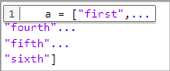
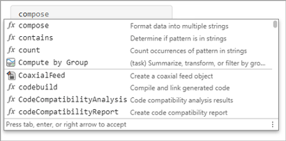
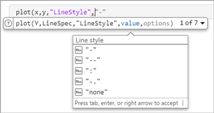
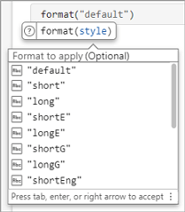
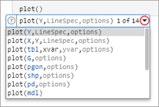
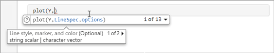

Check Syntax and Autocomplete Code as You Type
You can avoid syntax errors using syntax highlighting and delimiter matching. You also can write commands faster and autocomplete code using code suggestions.
Syntax Highlighting
To help you identify MATLAB® elements, some entries appear in different colors in the Command Window, the Editor, and the Live Editor. This color display is known as syntax highlighting. By default:
Keywords are blue.
Character vectors and strings are purple.
Unterminated character vectors are maroon.
Comments are green.
% check to see if A is greater than B if A > B "greater" elseif A < B "less" end
Except for errors, output in the Command Window does not appear with syntax highlighting.
MATLAB software copies the selection to the clipboard in RTF format, which many Microsoft® Windows® and macOS applications support. When you paste or drag a selection from the Editor and Live Editor to another application, such as Microsoft Word, the pasted text maintains the syntax highlighting colors and font characteristics from the Editor and Live Editor.
To change syntax highlighting settings, on the Home tab, in the Environment section, click Settings. Then, select Editor/Debugger > MATLAB Language or Editor/Debugger > Other Languages.
Before R2025a: Select MATLAB > Editor/Debugger > Language and from the Language drop-down list, choose a language.
Delimiter Matching
MATLAB indicates matched and mismatched delimiters, such as parentheses,
brackets, and braces, to help you avoid syntax errors. MATLAB also indicates paired language keywords, such as
for, if, while,
else, and end statements.
MATLAB indicates matching delimiters in the Editor, Live Editor, and Command Window by briefly underlining both delimiters in the pair.
MATLAB indicates mismatching delimiters in the Editor, Live Editor, and Command Window by briefly crossing out the mismatched delimiter.
If a matching delimiter exists, but it is not visible on the screen, a window opens and displays the line containing the matching delimiter. Click in the window to go to that line.

You can change if and when MATLAB alerts you to matched and mismatched delimiters. On the Home tab, in the Environment section, click Settings. Select MATLAB > Keyboard and in the Delimiter matching section, select from the available options.
Code Suggestions
When you write code in the Command Window, Editor, Live Editor, and App Designer, MATLAB provides real-time suggestions as you type. These suggestions include the names of functions, models, MATLAB objects, files, folders, variables, structures, graphics properties, Live Editor tasks, and code snippets. In addition, when you type a function name, MATLAB shows basic syntax information for the functions and offers suggestions for parameters and options.
Name Suggestions
As you type, MATLAB shows the most relevant name suggestions based on the text you
entered. To show new and more refined suggestions, continue typing. If a list of
suggestions does not appear, press Ctrl+Space or
Tab to show the list. If there are no suggestions,
MATLAB displays No suggestions.
To insert a suggestion in your code, use the arrow keys to select the suggestion and then accept it using Right Arrow, Tab, or Enter. To dismiss the list of suggestions without selecting anything, press Esc.

Name suggestions help complete graphics properties. For example plot(x,y,"LineStyle", and use suggestions to
complete the value of the LineStyle argument.

Name suggestions also help complete function arguments and
options. For example, type format( and use
suggestions to complete the format to apply.

MATLAB displays suggestions based on:
The current workspace variables.
Files and folders on the search path or in the current folder
Variables, functions, class properties, and class methods defined in the active document and available at the current cursor location. Field names of structure arrays defined within the active document are not included.
Function Syntax Suggestions
When you type the name of a function followed by a (, MATLAB shows basic syntax information for the function. If a function has
multiple syntaxes, use the drop-down arrow to the right of the syntax or
Ctrl+Down Arrow to show all available syntaxes. On
macOS systems, use Command+Down Arrow instead.

You can type an input for any argument that appears in blue. Enter your own input variables or values, and not the argument names shown in the suggestion. The displayed syntax options change based on the arguments you enter.
For each argument, MATLAB shows a description and indicates whether the argument is optional. If MATLAB suggests multiple arguments, click the arrow to the right of the argument description or use Ctrl+Alt+Right Arrow and Ctrl+Alt+Left Arrow to view the additional arguments. To open the documentation page for the function, click the Help button to the left of the function syntax suggestion.

Custom Functions
Suggestions for functions that you create come from function definition and require that the file be on the search path or in the current folder. For more information about customizing these suggestions, see Customize Code Suggestions and Completions.
Insert Tabs
To insert a tab, add a space before pressing Tab. Alternatively, to disable showing suggestions on tab, go to the Home tab, and in the Environment section, click Settings. To disable showing suggestions on tab in the Command Window, select MATLAB > Command Window > Suggestions. To disable showing suggestions on tab in the Editor, Live Editor, and App Designer. select MATLAB > Editor/Debugger > Suggestions and Autocompletions. Then, in the Suggestions section, clear the Use Tab to show suggestions (in addition to Ctrl+Space) setting.
MATLAB always inserts a tab if there are no available completions.
Change Default Suggestions Behavior
To change the default behavior of suggestions in the Command Window, Editor, Live Editor, and App Designer, go to the Home tab, and in the Environment section, click Settings. To change the default behavior in the Command Window, select MATLAB > Command Window > Suggestions. To change the default behavior in the Editor, Live Editor, and App Designer. select MATLAB > Editor/Debugger > Suggestions and Autocompletions. Then, in the Suggestions section, configure the different settings based on your preferences.
Disable showing suggestions automatically – Clear the Show suggestions automatically setting.
Disable showing suggestions when you press Tab – Clear the Use Tab key to show suggestions (in addition to Ctrl+Space) setting. When this setting is cleared, you can still show suggestions by pressing Ctrl+Space.
Disable accepting suggestions when you press the Right Arrow key – Clear the Use Right Arrow to accept suggestions (in addition to Tab and Enter) setting. When this setting is cleared, you can still accept a suggestion using the Tab and Enter keys.
Only accept a suggestion on Tab if it is the only suggestion – Select the Tab key accepts only on one suggestion setting.
Reduce the suggestion window size – Clear the Show suggestions tips setting.
To reset the window that displays the list of suggestions to its original size, click the Reset Default Suggestion Size button.